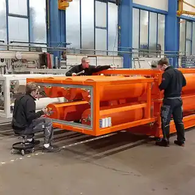

Duitse accumulatorkennis met decennia aan industriële ervaring.
Roth Hydraulics ontwikkelt druk- en energieopslagoplossingen voor industriële en mobiele hydrauliek. In Nederland wordt het merk commercieel en technisch ontsloten via Hobo Hydrauliek B.V.

Excellent pressure solutions.
De productfocus omvat membraan-, blaas- en zuigeraccumulatoren, drukvaten, accessoires en complete accumulatorsystemen. De oplossingen worden gebruikt voor onder meer energieopslag, demping, compensatie, mediascheiding en noodfuncties.
Productie en engineering zijn geworteld in Duitsland; voor Nederlandse klanten biedt Hobo Hydrauliek de lokale route naar selectie, offerte en ondersteuning.
Bekijk het productprogramma →Van industriële componenten naar specialistische accumulatorsystemen.
Roth bouwt al sinds de jaren vijftig expertise op in hydraulische energieopslag.
Oorsprong van de onderneming.
Start met hydraulische componenten en zuigeraccumulatoren.
Seriematige productie van accumulatoren.
Integratie in Roth Industries.
Uitbreiding met blaasaccumulatoren.
Membraanaccumulatoren worden onderdeel van het programma.
De onderneming opereert onder de naam Roth Hydraulics.
Roth Hydraulics nodig voor een Nederlands project?
Hobo Hydrauliek is uw officiële distributeur en lokale contactpunt.